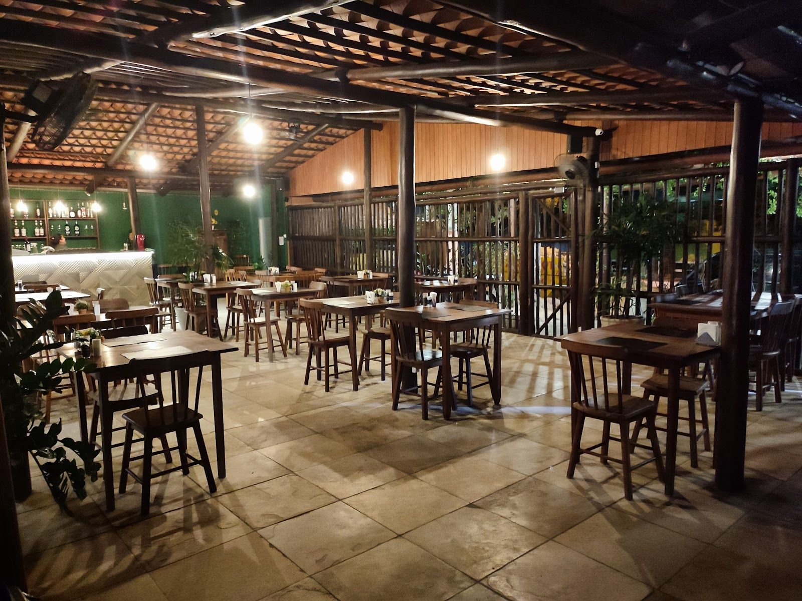
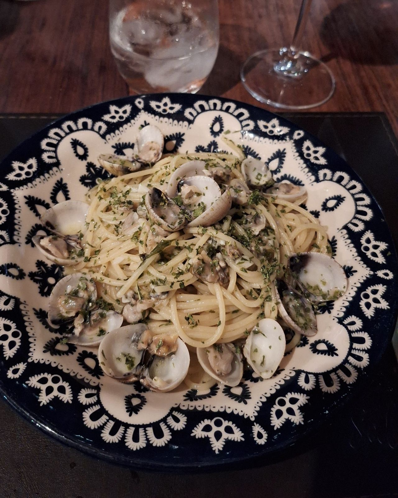
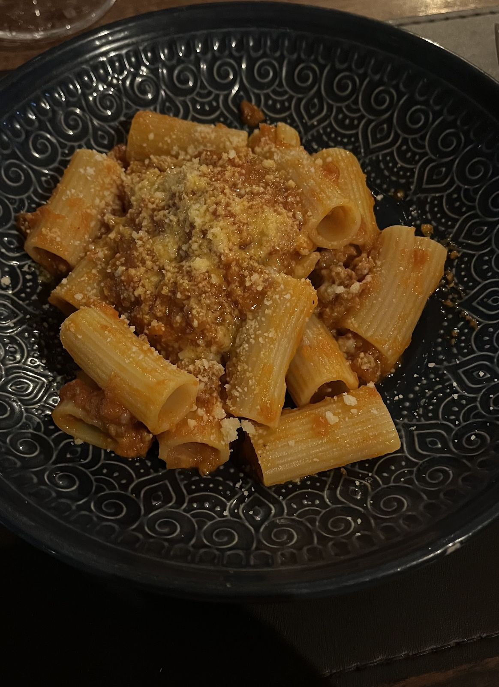
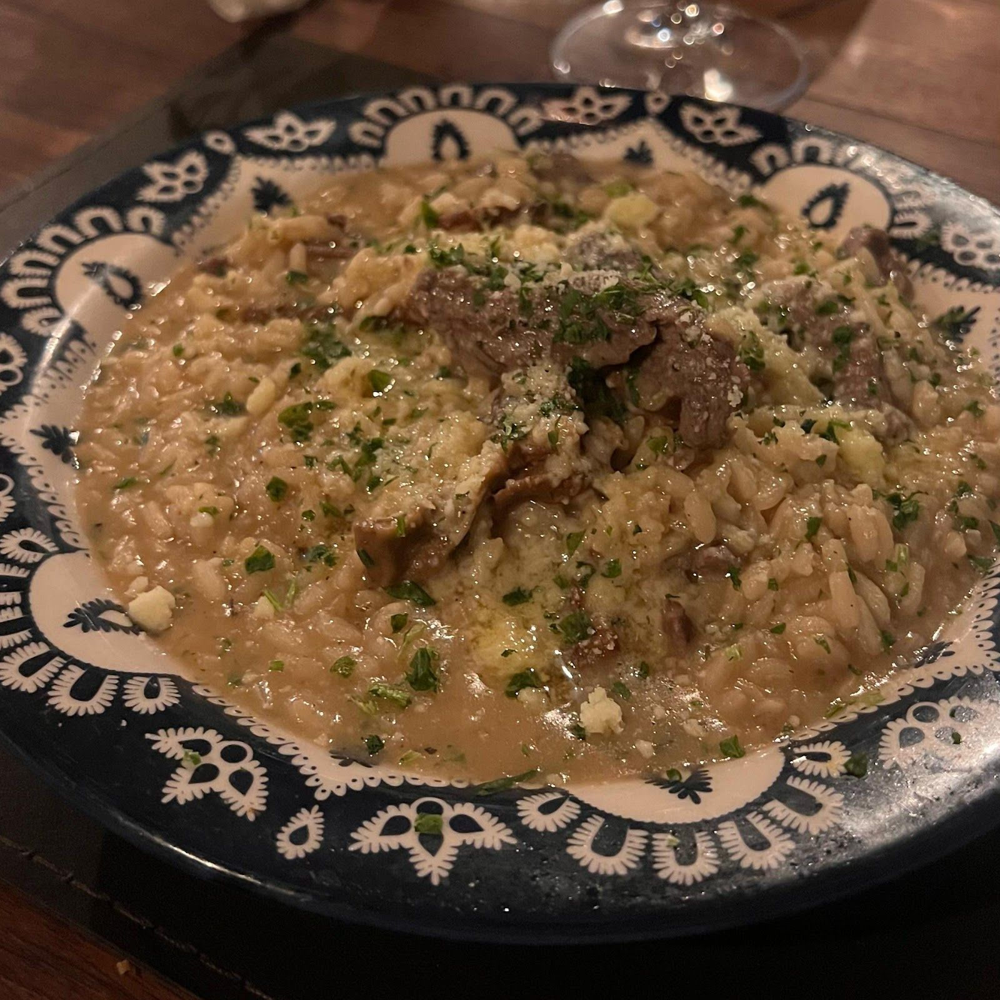
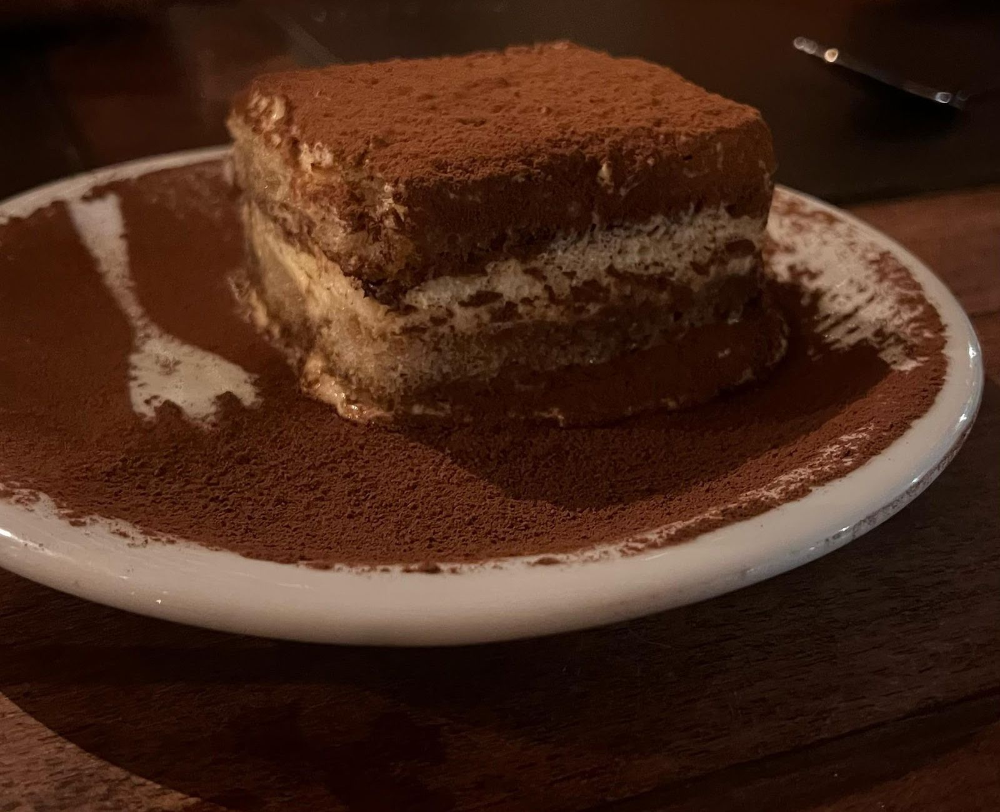
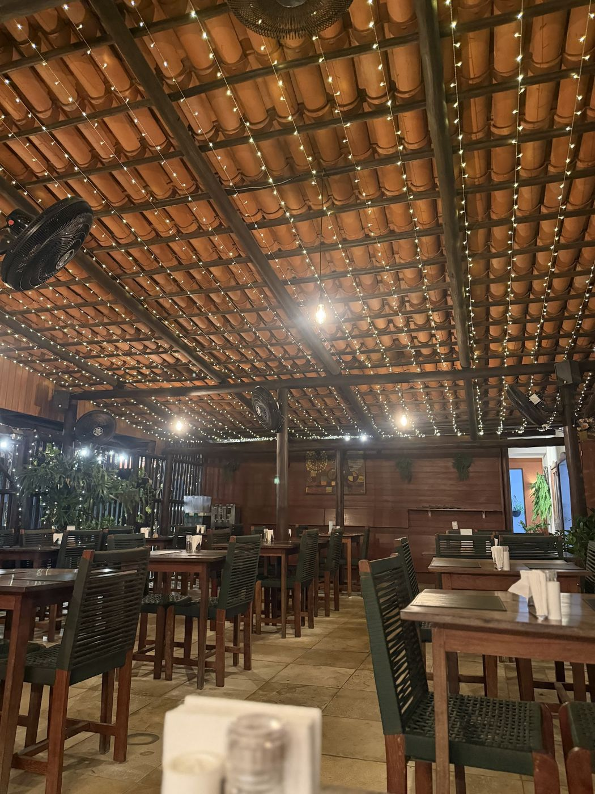
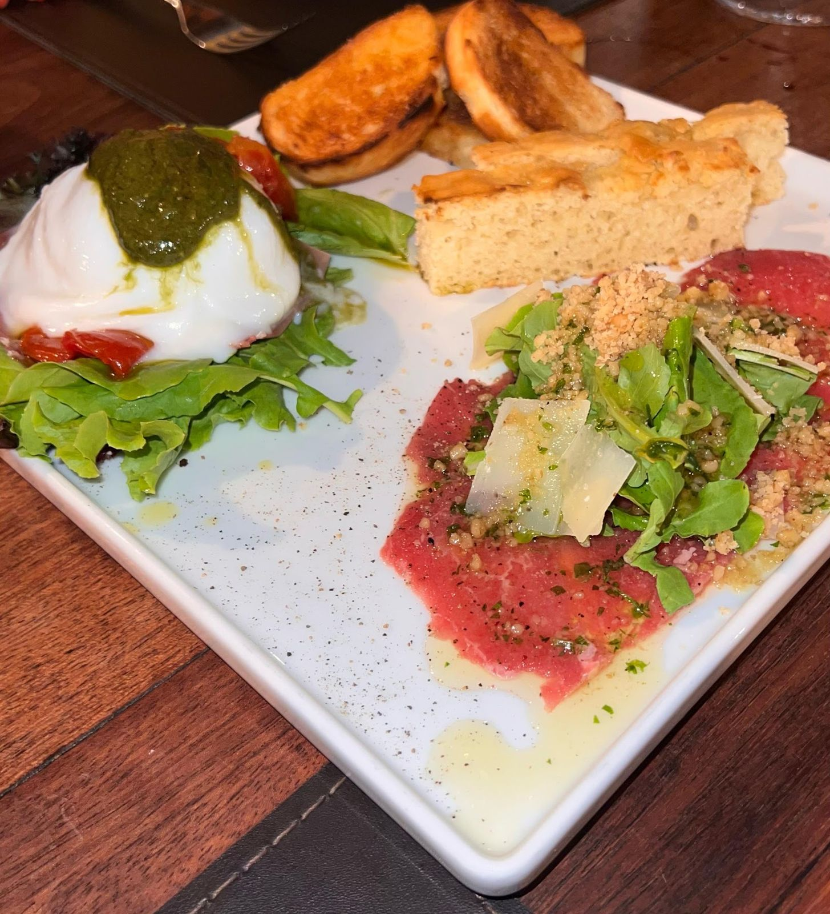
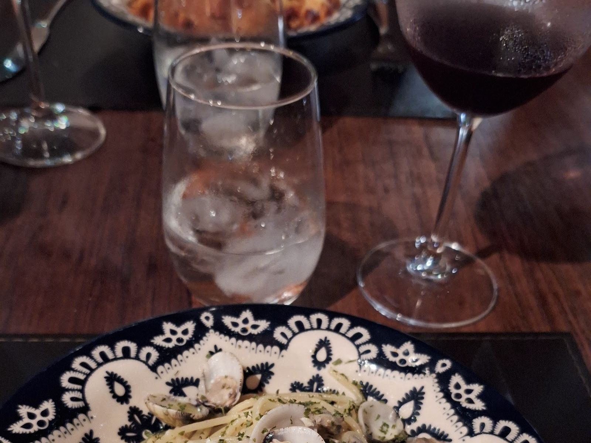
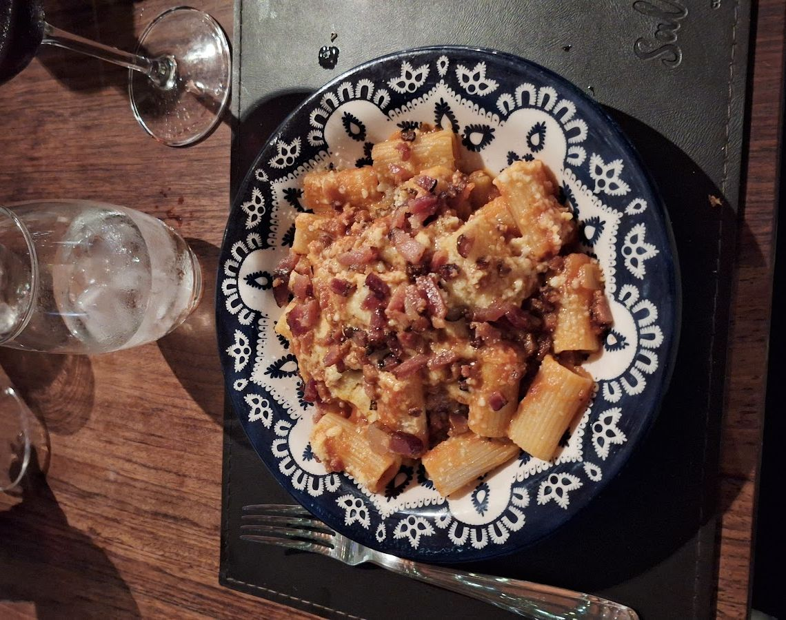

O salão
Madeira, telha aparente e luz quente. Quem já foi descreve o ambiente como aconchegante e tranquilo.

Massas, risoto, entradas pra dividir e carta de vinhos, num salão de madeira e luz baixa dentro do Valencia Hotel.
No Valencia Hotel, em Capim Macio, o Sale e Pepe serve cozinha italiana e mediterrânea de terça a domingo, só à noite.
Madeira, telha aparente e luz quente. Quem já foi descreve o ambiente como aconchegante e tranquilo.
Menu executivo e menu compartilhado para dois, que um cliente descreve com duas entradas, uma massa, um prato de carne e uma sobremesa.
composição e valores a confirmarVinho pra acompanhar a massa, com “variedade e preços bons”, nas palavras de quem jantou lá.
rótulos a confirmar
Vôngoles e salsinha, na louça azul e branca que aparece em quase toda foto de quem janta no Sale e Pepe.



Fotos de clientes no Google Maps.
Com tomate e folhas verdes.
Com rúcula e lascas de queijo.
Vôngoles e salsinha.
Com molho de carne e queijo ralado.
Ingredientes a confirmar com a cozinha.
Citado nas avaliações do Google; composição a confirmar.
Duas entradas, uma massa, um prato de carne e uma sobremesa.
Com cacau por cima.
ilustrativo Pratos identificados nas fotos e avaliações de clientes no Google. Nomes, receitas e preços entram aqui a partir do cardápio da casa.




Escolha o dia e o horário: a mensagem já sai pronta no WhatsApp do bistrô. reserva a confirmar
4,7452 avaliações
“A Josi que nos atendeu explicou claramente sobre os pratos e nos deu a sugestão de pedir o Menu compartilhado que servia muito bem 2 pessoas.”
“Achei bem aconchegante o ambiente, atendimento rápido […] As entradas estavam ótimas, bem saborosas.”
“Primeira vez no local e primeira impressão, adorei […] Recomendo principalmente pela comida e atendimento.”